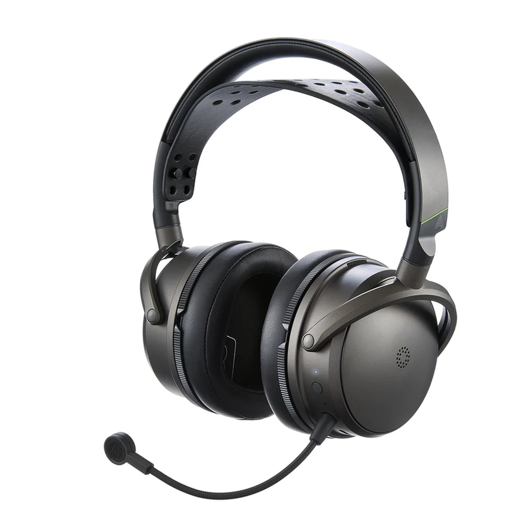

← All Guides
Best Flagship Gaming Headset 2026: What 4 Reviewers Agree On
Aggregated from 4 YouTube reviews · Updated 2026-10-03

Audeze Maxwell 2
The unanimous top-tier pick across all 4 sources — RTINGS's #1 gaming headset with 90mm planar drivers, LDAC, a 77-hour battery and a much-improved detachable mic.
📺 Show 4 review videos
📺
RTINGS.com — The 6 Best Gaming Headsets of 2026
Watch Video📺
Hardware Canucks — The Best Wireless Gaming Headset MICROPHONES
Watch Video📺
BadSeed Tech — BEST Wireless Gaming Headset 2025 Tier List - For PS5, Xbox, PC & More
Watch Video📺
PC Gamer — Best gaming headsets in 2026: I'd bet my ears on these headphones
Watch Video📊 Quick Comparison
| # | Product | Recommended By | Best For | Price |
|---|
| 1 | Audeze Maxwell 2 | 4/4 reviewers | Best flagship overall | $329-349 |
| 2 | SteelSeries Arctis Nova Pro Wireless | 3/4 reviewers | Premium multi-platform flagship | $349-400 |
| 3 | Razer BlackShark V3 Pro | 2/4 reviewers | Flagship sound, half the price | $200-249 |
| 4 | Logitech Astro A50 X | 2/4 reviewers | Best multi-console flagship | $350-380 |
💬 Reviewer Consensus
Common Pros
- Audeze Maxwell 2: RTINGS's #1 gaming headset — planar detail, LDAC, 77-hour battery, best-in-class detachable mic (4/4 mention)
- SteelSeries Arctis Nova Pro Wireless: the most complete feature set — hot-swap batteries, ANC, simultaneous 2.4GHz + Bluetooth (3/4 mention)
- Razer BlackShark V3 Pro: flagship-tier sound and 70-hour battery at $249 — undercuts every rival flagship (2/4 mention)
- Logitech Astro A50 X: PLAYSYNC base station switches PC, Xbox and PS5 at one button press; RTINGS's comfort alternative (2/4 mention)
Common Cons
- Audeze Maxwell 2: ~560g weight is the heaviest flagship in the class (2/4 mention)
- Logitech Astro A50 X: $379 with a bulky base station — RTINGS measured only 26.4-hour battery (1/4 mention)
- SteelSeries Arctis Nova Pro Wireless: premium price for features casual players will never use (1/4 mention)
Like what you see? Audeze Maxwell 2 🔍 Purchase link under manual verification
🔍 Detailed Breakdown
Audeze Maxwell 2
The unanimous top-tier pick: RTINGS's #1 gaming headset, praised by PC Gamer, Hardware Canucks and BadSeed Tech. Planar magnetic detail, LDAC, a 77-hour battery and a genuinely great mic — heavy, but unmatched.
Battery life: 77 hours (RTINGS-tested)
Drivers: 90mm planar magnetic
Microphone: Detachable boom, much improved over the original Maxwell
Wireless: USB-C 2.4GHz dongle + Bluetooth 5.3 with LDAC
Best for: Best flagship overall - $329-349
SteelSeries Arctis Nova Pro Wireless
The most complete package in the class: hot-swap batteries, ANC, simultaneous dual wireless and 360-degree spatial audio. Scored strongly in Hardware Canucks' mic testing; its Omni successor sits in RTINGS's notable mentions.
Battery system: 2 hot-swap batteries, effectively unlimited playtime
Microphone: Retractable ClearCast Gen 2
Noise control: Active noise cancellation
Wireless: 2.4GHz + Bluetooth 5.3, simultaneous
Best for: Premium multi-platform flagship - $349-400
Razer BlackShark V3 Pro
PC Gamer's #1 gaming headset overall and an RTINGS upper mid-range pick. 70-hour battery, low-latency HyperSpeed wireless and flagship-tier audio at $249 — it undercuts every other flagship here by $100+.
Battery life: Up to 70 hours
Drivers: 50mm TriForce Bio-Cellulose Gen-2
Microphone: Detachable HyperClear cardioid 9.9mm
Wireless: HyperSpeed 2.4GHz + Bluetooth
Best for: Flagship sound, half the price - $200-249
Logitech Astro A50 X
The premium console-hopper: its PLAYSYNC base station switches audio between PC, Xbox and PS5 at the press of a button. RTINGS's lighter comfort alternative to the Maxwell 2, with a parametric-EQ app — but the priciest pick here.
Battery life: 26.4 hours (RTINGS-tested)
Drivers: 40mm PRO-G graphene
Microphone: Boom mic with LIGHTSPEED wireless
Switching: PLAYSYNC HDMI 2.1 base station
Wireless: LIGHTSPEED 2.4GHz + Bluetooth
Best for: Best multi-console flagship - $350-380
Also considered
We compared 4 products. Audeze Maxwell 2 won overall — the rest are strong in narrower niches:
- SteelSeries Arctis Nova Pro Wireless — Premium multi-platform flagship (3/4 reviewers)
- Razer BlackShark V3 Pro — Flagship sound, half the price (2/4 reviewers)
- Logitech Astro A50 X — Best multi-console flagship (2/4 reviewers)
📖 Confused by the specs? Plain-English explanations
❓ Frequently Asked Questions
Why is the Audeze Maxwell 2 our top pick?
It's recommended by multiple reviewers for its overall balance of performance, features, and value. See the detailed breakdown above.
Our Pick: Audeze Maxwell 2
The unanimous top-tier pick across all 4 sources — RTINGS's #1 gaming headset with 90mm planar drivers, LDAC, a 77-hour battery and a much-improved detachable mic.
$329-349
🔍 We're manually verifying this product's purchase link — check back soon.